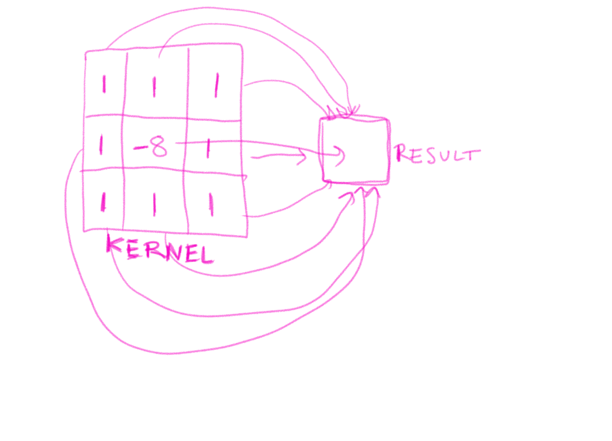

<!doctype html>
<html>
	<head>
		<meta charset="utf-8">
		<meta name="viewport" content="width=device-width, initial-scale=1.0, maximum-scale=1.0, user-scalable=no">

		<title>Framebuffers</title>

		<link rel="stylesheet" href="../css/reveal.css">
		<link rel="stylesheet" href="../css/theme/black.css">

		<!-- Theme used for syntax highlighting of code -->
		<link rel="stylesheet" href="../lib/css/zenburn.css">

		<!-- Printing and PDF exports -->
		<script>
			var link = document.createElement( 'link' );
			link.rel = 'stylesheet';
			link.type = 'text/css';
			link.href = window.location.search.match( /print-pdf/gi ) ? '../css/print/pdf.css' : '../css/print/paper.css';
			document.getElementsByTagName( 'head' )[0].appendChild( link );
		</script>

	</head>
	<body>
		<script src="../lib/js/head.min.js"></script>
		<script src="../js/ext/reveal.js"></script>
		<div class="reveal">
			<div class="slides">

			<section data-markdown>
				<script type="text/template">
				### Framebuffer
				
				All the information in a render . . .

				
				</script>
			</section>

			<section data-markdown>
				<script type="text/template">
				### Framebuffer
				
				Has: 

				* A 4D buffer of pixel info (COLOR_ATTACHMENT)  
				* A 1D buffer of depth info (DEPTH_ATTACHMENT)  
				* A 1D buffer of stencil info (STENCIL_ATTACHMENT)   

				The default framebuffer is your window, but you can create
				a different one in which to render your imagery, then add post
				processing effects, and then display the result.

				* pixels typically get stored as a read-write texture
				* depth and stencil typically get stored as a write-only renderbuffer
				
				</script>
			</section>

			<section data-markdown>
				<script type="text/template">
				### Framebuffers: OpenGL calls
				
* **Create:** 
		glGenFramebuffer (or glCreateFramebuffer )
* **Bind:**   
		glBindFramebuffer(GL_FRAMEBUFFER, fbId) 
* **Attach:** 
		glFramebufferTexture2D(GL_FRAMEBUFFER, GL_COLOR_ATTACHMENT0, GL_TEXTURE_2D, texId, 0)
* **Attach (write-only):**
		glFramebufferRenderbuffer(GL_FRAMEBUFFER, attachment, GL_RENDERBUFFER, rId)
* **Fill:** bind it, then draw some things

				</script>
			</section>			

			<section data-markdown>
				<script type="text/template">
				### Renderbuffer: 

				* Create: 
						rId = glCreateRenderbuffer()
				* Bind: 
						glBindRenderBuffer(rId)
				* Allocate: 
						glRenderbufferStorage(GL_RENDERBUFFER, GL_DEPTH_COMPONENT16, w,h)
				* Can also use `GL_STENCIL_INDEX8` or `GL_DEPTH_STENCIL` etc

				</script>
			</section>			

			<section data-markdown>
			<script type="text/template">
			### Render to Texture:

			We need:

			* Width and Height
			* A framebuffer
			* A texture for colors
			* A renderbuffer for depth
			* A "slab" (a rectangle and sampler2D shader)

			</script>
			</section>	

			<section data-markdown>
			<script type="text/template">
			### Render to Texture:

			* **init(w,h):**
				- fbo.init() -- create and bind
				- texture.init(w,h) -- allocate
				- rbo.init(w,h)	-- allocate
				- attach storage to framebuffer
				- initialize a slab shader and rectangle
			* **begin:**
				- bind framebuffer, clear view, set viewport
			* **end:**
				- unbind framebuffer
			* **show(w,h):**
				- set viewport to w,h 
				- bind texture, slab shader, and draw rectangle mesh

			</script>
			</section>

			<section data-markdown>
			<script type="text/template">			
			
			</script>
			</section>


<section data-markdown>
<script type="text/template">
### Kernel Effects: Edges

	uniform sampler2D texture;
	uniform float amt;
	varying vec2 vuv;

	void main(){
	 vec2 uv[9]; float kernel[9]; vec3 col = vec3(0.);
	 uv[0] = vec2(-amt, amt); uv[1] = vec2(0.,amt); uv[2] = vec2(amt,amt);
	 uv[3] = vec2(-amt, 0.);  uv[4] = vec2(0.,0.);  uv[5] = vec2(amt,0.);

	 kernel[0] = 1.; kernel[1] =  1.;  kernel[2] = 1.;
	 kernel[3] = 1.; kernel[4] = -8.;  kernel[5] = 1.;
	 kernel[6] = 1.; kernel[7] =  1.;  kernel[8] = 1.;

	 for(int i = 0; i < 9; i++)
	  col += texture2D(texture, vuv + uv[i]).rgb * (kernel[i]); 
	 gl_FragColor=vec4(col, 1.0);
	}

</script>
</section>

<section data-markdown>
<script type="text/template">
### Kernel Effects: Blur
	
	...

  	 kernel[0] = 1.; kernel[1] = 2.; kernel[2] = 1.;
  	 kernel[3] = 2.; kernel[4] = 4.; kernel[5] = 2.;
  	 kernel[6] = 1.; kernel[7] = 2.; kernel[8] = 1.;

	 for(int i = 0; i < 9; i++)
	  col += texture2D(texture, vuv + uv[i]).rgb * (kernel[i])/16.; 

	...

</script>
</section>

<section data-markdown>
<script type="text/template">
### Kernel Effects: Sharpen
	
	...

  	 kernel[0] = -1.; kernel[1] = -1.; kernel[2] = -1.;
  	 kernel[3] = -1.; kernel[4] = 9.; kernel[5] = -1.;
  	 kernel[6] = -1.; kernel[7] = -1.; kernel[8] = -1.;

	 for(int i = 0; i < 9; i++)
	  col += texture2D(texture, vuv + uv[i]).rgb * (kernel[i]); 

	...

</script>
</section>

		<section data-markdown>
		<script type="text/template">
		### Feedback Effects: Delay
			
		Two Renders: current and previous

				`$$ f_{i} = f_{i-1} * .9 + s_i $$`
			
		* current.bind()
		* draw previous * .9
		* draw scene on top
		* current.unbind();
		* previous.bind();
		* draw current 
		* previous.unbind();
		* draw current to window

		</script>
		</section>


			</div>

		</div>


		<script>
			// More info https://github.com/hakimel/reveal.js#configuration
			Reveal.initialize({
				history: true,

				math: {
				    mathjax: 'https://cdn.mathjax.org/mathjax/latest/MathJax.js',
				    config: 'TeX-AMS_HTML-full'  // See http://docs.mathjax.org/en/latest/config-files.html
				},


				// More info https://github.com/hakimel/reveal.js#dependencies
				dependencies: [
					{ src: '../plugin/math/math.js', async: true },
					{ src: '../plugin/markdown/marked.js' },
					{ src: '../plugin/markdown/markdown.js' },
					{ src: '../plugin/notes/notes.js', async: true },
					{ src: '../plugin/highlight/highlight.js', async: true, callback: function() { hljs.initHighlightingOnLoad(); } }
				]
			});
		</script>
	</body>
</html>	